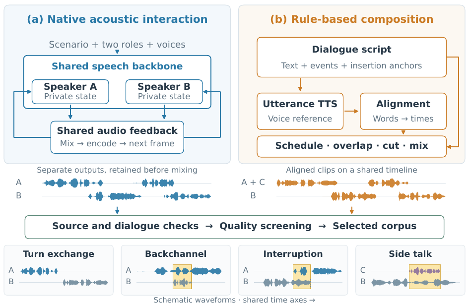
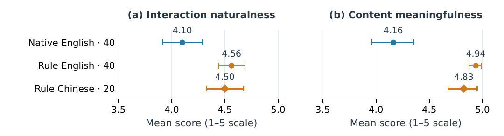

01
Autonomous generation
Two role-conditioned streams share the acoustic feedback of the conversation. Words and timing emerge together.
Full-duplex conversational speech
Abstract
DuplexTTS constructs full-duplex dialogue data through two complementary routes: native autonomous generation, where two role-conditioned streams share acoustic feedback, and rule-based composition, where aligned speech events control turns, backchannels, interruptions, and side talk. A common screening and evaluation pipeline turns both routes into traceable training data.
This demo
Listen to the two routes, inspect their timing, and see how the resulting data changes full-duplex behavior.
Explore audio examplesAudio examples
Each sample is a stereo conversation. The waveform follows the actual mix; open Tracks when you want to inspect A and B separately.
How it works
Autonomous generation gives the model room to develop an exchange. Scripted composition gives the researcher direct control over interaction events. Both routes end in the same screening and export process.

Two role-conditioned streams share the acoustic feedback of the conversation. Words and timing emerge together.
Written utterances are synthesized, aligned, and placed on a common timeline. Interaction events become controllable.
Evidence
The corpus is useful when it sounds plausible and teaches a model when to respond, continue, and stay quiet.

Two listeners · 1–5 scale · higher is better
macro expected-behavior accuracy after training on both routes
+16.60 percentage points over the original model
The behavior we keep
Full-duplex speech is more than alternating sentences. The corpus records who speaks, when they enter, and what the other side hears.